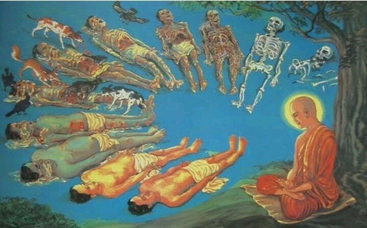
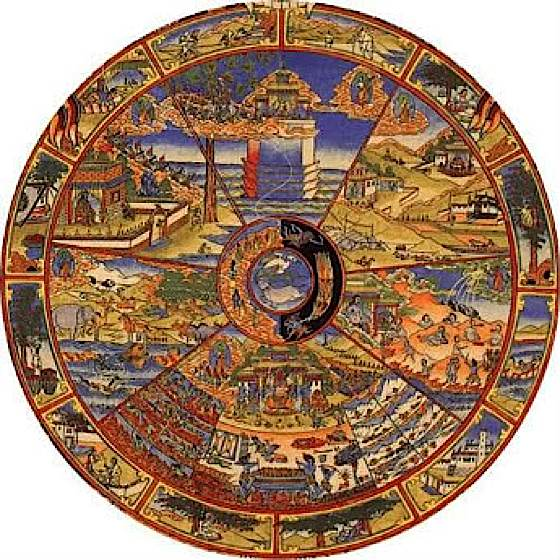
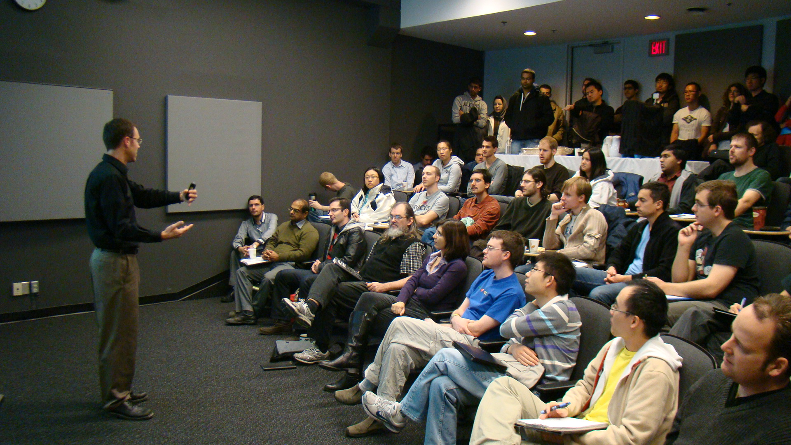

| Topic | xxxxxAstrologyxxxx | ||
| Lecturer | Daniel Brust | ||
| Date | 20/09/2017 | ||
| Place | xxxx | ||
| Description |  |
||

| Topic | xxxxxAstrologyxxxx | ||
| Lecturer | Daniel Brust | ||
| Date | 20/09/2017 | ||
| Place | xxxx | ||
| Description | |
||
Daniel Brust exposed that a deepened understanding and experience of the reality of successive earth lives formed the basis for true spiritual knowledge of the relationship of human beings and the cosmos. In contrast to most teachings on this subject, he gave concrete descriptions of the metamorphoses undergone by individuals in the course of successive incarnations. He also introduced specific examples of the working of karma, as well as practical exercises for experiencing the reality of incarnation.
Daniel described the development of "feeling memory" and gave many other exercises that leaded to real knowledge of karma and reincarnation. Examples were also given of how karmic effects passed between incarnations and the impact of the idea of reincarnation on our moral lives was clearly shown.
After this lecture many participants found out the significance of reincarnation and karma in modern culture.
"If you think about the concept of reincarnation, it's essentially uploading yourself and your spirit into a new form, a new hard drive as it were."
|  |  |
|  |  |